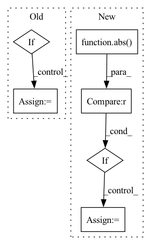

Pattern ID :24126
Before Change
while time.time() - t < video_duration:
diff = video_duration - (time.time() - t)
margin = 0.001
if (diff > starting_checkpoint_second - margin and diff < starting_checkpoint_second + margin):
filename = "scripts/tools/beep-06.wav"
wave_obj = sa.WaveObject.from_wave_file(filename)
play_obj = wave_obj.play()
play_obj.stop()After Change
time_left = video_duration - time.time() + t
while time_left > 0:
if not record and time_left > 0.5 and abs(countdown - time_left) <= margin :
_play_audio(countdown_sound)
countdown -= 1
ret, frame_norm = cap.read()
frame = cv2.flip(frame_norm, 1)In pattern: SUPERPATTERN
Frequency: 3
Non-data size: 6
Instances Fragment ID: 74837716
Project Name: twentybn/sense
Commit Name: 04029a19d081d68430329fdc93ef54df9130d400
Time: 2020-12-18
Author: manik.dhingra311@gmail.com
File Name: scripts/tools/video_capture.py
M Class Name: AnonimousClass
N Class Name: AnonimousClass
M Method Name: _capture_video(2)
N Method Name: _capture_video(2)
M Parent Class:
N Parent Class:
M File Name: scripts/tools/video_capture.py
N File Name: scripts/tools/video_capture.py
M Start Line: 62
M End Line: 90
N Start Line: 80
N End Line: 127
Before Change
key of spatial data in adata.obsm
// reindex adata1 and adata2 by matching then calculate the pairwise euclidean distance
if abs(adata1.obsm[spatial_key].max()) > 1 or abs(adata1.obsm[spatial_key].min()) > 1:
adata1.obsm["scale_spatial"] = adata1.obsm[spatial_key]/adata1.obsm[spatial_key].max()
if abs(adata2.obsm[spatial_key].max()) > 1 or abs(adata2.obsm[spatial_key].min()) > 1:
adata2.obsm["scale_spatial"] = adata2.obsm[spatial_key]/adata2.obsm[spatial_key].max()
spatial_key = "scale_spatial"After Change
// reindex adata1 and adata2 by matching then calculate the pairwise euclidean distance
for adata in [adata1, adata2]:
coord = adata.obsm[spatial_key]
if abs(coord.ptp()) > 1 or abs(coord.max()) > 1 :
adata.obsm["scale_spatial"] = (coord - coord.min(0))/coord.ptp(0)
else:
adata.obsm["scale_spatial"] = coord
coord1 = adata1.obsm["scale_spatial"][matching[1,:]]
coord2 = adata2.obsm["scale_spatial"]
distance = np.sqrt((coord1[:,0] - coord2[:,0])**2+(coord1[:,1] - coord2[:,1])**2) Fragment ID: 74837703
Project Name: gao-lab/slat
Commit Name: 7cdf361c26cbdb2ff6bcb4a29245fc7d6f06001c
Time: 2023-04-17
Author: xiachenrui@mail.cbi.pku.edu.cn
File Name: scSLAT/metrics.py
M Class Name: AnonimousClass
N Class Name: AnonimousClass
M Method Name: euclidean_dis(4)
N Method Name: euclidean_dis(4)
M Parent Class:
N Parent Class:
M File Name: scSLAT/metrics.py
N File Name: scSLAT/metrics.py
M Start Line: 218
M End Line: 224
N Start Line: 218
N End Line: 225
Before Change
elapsed = time.perf_counter() - self.start
num_bars = self.num_reqs % self.bar_len
num_bars = self.bar_len if not num_bars and self.num_reqs else max(num_bars, 1)
if progress:
self.num_docs += progress
sys.stdout.write(
"⏳ {:>10} |{:<{}}| ⏱️ {:3.1f}s 🐎 {:3.1f} RPS".format(After Change
self._num_update_called += 1
self._completed_progress += progress
if (
abs(self._completed_progress - self._last_rendered_progress) < 0.5
and not all_completed
):
return
self._last_rendered_progress = self._completed_progress
sys.stdout.write("\r")
elapsed = time.perf_counter() - self.start
num_bars = self._completed_progress % self._bars_on_row
num_bars = (
self._bars_on_row
if not num_bars and self._completed_progress
else max(num_bars, 1)
)
num_fullbars = math.floor(num_bars)
num_halfbars = 1 if (num_bars - num_fullbars <= 0.5) else 0
bar_color = "yellow" if all_completed else "green" Fragment ID: 74837695
Project Name: jina-ai/jina
Commit Name: 91be0f7612df8c39c32f1ea80a17b2547822e5da
Time: 2021-08-22
Author: artex.xh@gmail.com
File Name: jina/logging/profile.py
M Class Name: ProgressBar
N Class Name: ProgressBar
M Method Name: update(3)
N Method Name: update(2)
M Parent Class: TimeContext
N Parent Class: TimeContext
M File Name: jina/logging/profile.py
N File Name: jina/logging/profile.py
M Start Line: 226
M End Line: 247
N Start Line: 215
N End Line: 254